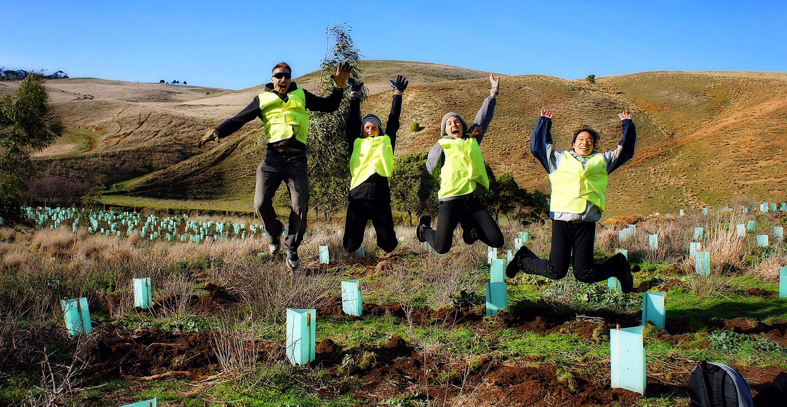
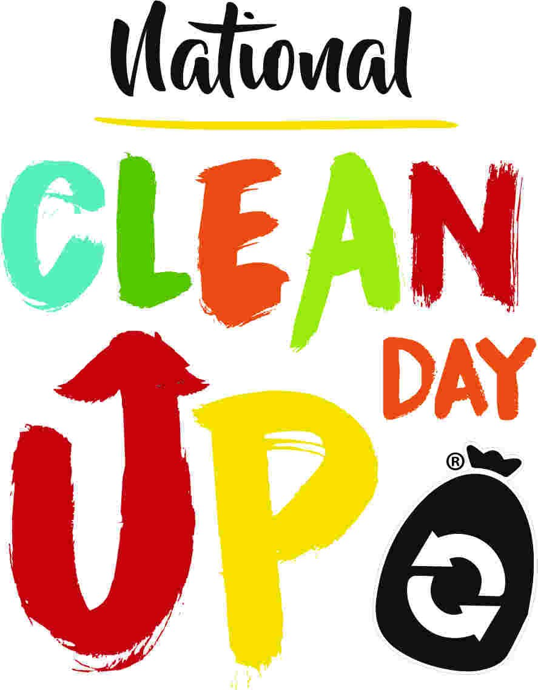

Our Mission
The mission is to reduce illegal dump sites around the city giving our streets more life and better public sanitation. Maintaining public recreational areas so that children have parks to play at, rather than roaming in the streets. To create a cleaner and brighter future for generations to come.
Our Vision
Our vision is to bring Pretoria to its former glory as the cleanest city in South Africa, while uniting citizens to cherish the beauty that green thumbs can create.
Our Goals
- 🌿 Cleanup and maintain the public parks in our neighbourhoods
- 🏞️ Clear out illegal dump sites, especially in underprivileged areas
- ♻️ Promote zero-waste and recycling programs in schools
- 📚 Educate the next generation with eco-awareness campaigns

